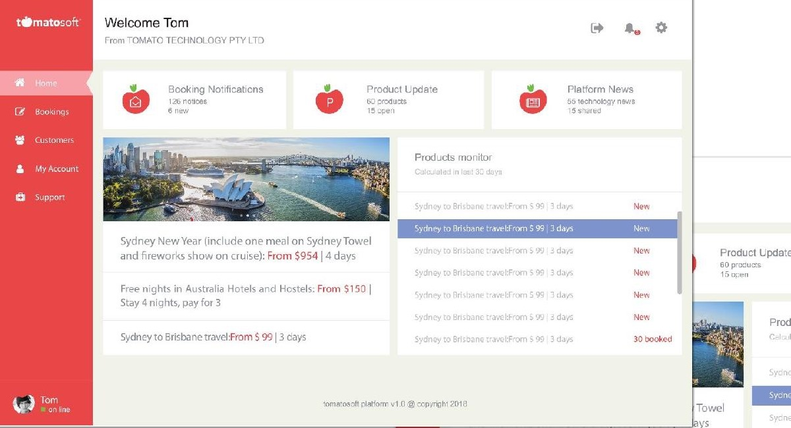

Task-led navigation
Bookings, customers, account tasks, and support remain consistently available.
Travel technology / Platform UI / 2018
A desktop front-end for travel bookings, customer operations, product updates, notifications, and tourism inventory.
01 / Brief
Travel operations move across bookings, customer requests, product inventory, supplier updates, and time-sensitive notifications. The platform brings those signals into a shared desktop workspace.
The design emphasises a clear navigation rail, scannable status summaries, and product monitoring so staff can identify changes without opening each booking or product record.
02 / Interface
TOMATOSOFT / TRAVEL OPERATIONS PLATFORM

Bookings, customers, account tasks, and support remain consistently available.
Counts and status groups highlight what changed and what needs attention.
Inventory and destination products stay visible alongside day-to-day operations.
03 / Product scope
The platform concept established a shared visual language for operational dashboards, booking detail, product monitoring, notifications, and support. It also informed related web and mobile travel interfaces.